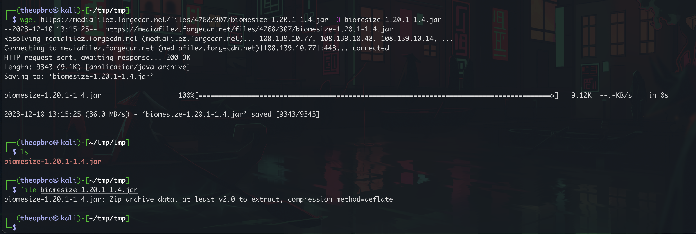
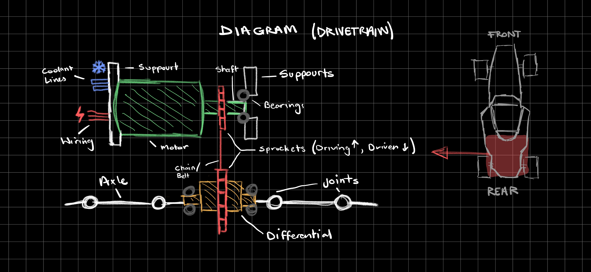

.png)
Bio
Originating from the lively streets of the Northern Bay Area, California, Alex Canchola is a bright creative mind seeking answers. Unveiling the depths of technologies and pushing the boundaries of engineering, Alex Canchola is the brilliant mind behind some of the most unique lone hands-on projects. With a unique ability to work under tense and stressful situations, Alex Canchola's interests are a rollercoaster of differences, taking viewers on a relentless journey into the different activities and thoughts that realm of the mind.
My Approach
My approach to creating impactful, memorable learning experiences stems from a deep fascination with the complexities of computer science, computer engineering, and cybersecurity, alongside a passion for mechanical engineering. I am captivated by the intricate mechanics of technology, the art of system design, and the nuanced, interconnected network dynamics within cybersecurity. Driven by a desire to craft thought-provoking, character-building, and immersive projects, I aim to deliver experiences that inspire and engage both myself and others. My work is dedicated to pushing the boundaries of the engineering field, constantly exploring new challenges and creating compelling projects that challenge and entertain, with a vision of advancing innovation across the technology landscape.
Projects
Google Cloud Server
Linux
The Google Cloud Server was deployed to operate continuously with automated rebooting capabilities. This server was implemented for a Minecraft environment, accommodating up to 14 concurrent players at peak usage. Hosted on a Google Cloud Platform virtual machine running Ubuntu Linux, the server utilized command line operations for management and enabled external mod packs to enhance player experience. The Minecraft server remains accessible today on a designated IP address and specific game version.
K20 Sandrail
ECU

Since its inception in 2021, this sandrail project has evolved from a basic frame into a fully operational vehicle powered by a K20 engine swapped from a 2005 Acura RSX Base Model. Custom wiring harness adapters were developed, and a KTuner ECU was installed to optimize fuel-to-air ratios. The dashboard was meticulously hand-wired and soldered, with additional welding performed on the frame to secure mounting points. The project also included the integration of fuse boxes with appropriately rated fuses and relays, alongside the precise use of a voltmeter for system calibration.
FSAE
Formula Society Of Inovative Engineers
As part of the Formula Society of Automotive Engineers (FSAE) electric vehicle project, our team is dedicated to designing and building a high-performance electric race car. The project is divided into specialized subteams, including electrical, drivetrain, suspension, frame, and brakes. I focus on the electrical and drivetrain systems, ensuring efficient power distribution and drivetrain performance, while collaborating with other subteams to achieve optimal integration. Our work involves advanced engineering solutions, from battery management and motor control to precision wiring and system diagnostics, contributing to a vehicle built for competition and innovation in electric mobility.
Wordle Game
This C++-based Wordle game was developed with a focus on terminal compatibility, enabling synchronized interaction between the game interface and the keyboard. The game is fully projected within the terminal, featuring real-time statistics, multiple game modes, and a data persistence feature that saves progress upon exit and resumes seamlessly on re-entry. The design incorporates two parallel terminal processes: one displaying the game and another tracking keyboard output. This project demonstrates effective use of terminal-based synchronization and data management, enhancing player experience through intuitive controls and persistent gameplay.
AI TicTacToe
This C-based Tic-Tac-Toe game was designed for terminal play, allowing users to compete against either another player or a computer-controlled AI. The AI component includes three difficulty levels: easy, medium, and an "impossible" mode powered by an advanced algorithm, providing a challenging experience for players. The game features customizable matrix sizes for flexible gameplay, real-time statistics tracking, and seamless interaction within the terminal environment. This project showcases the implementation of adaptive AI strategies, player-versus-player and player-versus-computer modes, and an engaging, customizable user experience within a command-line interface.
Google Extension
This Google Chrome extension, developed in Java, provides users with an estimated reading time for any webpage. Once activated, the extension appears in the top-right corner of the browser, displaying the time required to read the full content of the page. Users can also select specific portions of text to receive an updated reading time tailored to the highlighted content. This extension leverages real-time content analysis to offer a practical and intuitive reading experience, allowing users to plan their reading efficiently based on word count and average reading speeds.